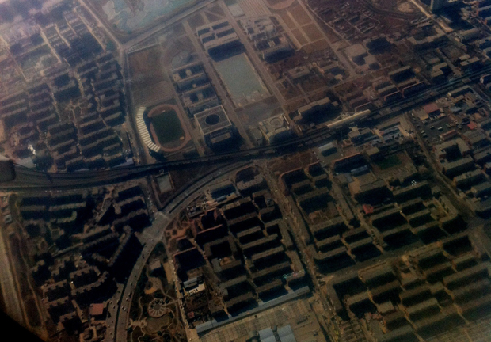

回到北京，从17℃掉进－7℃的城市。心情并没有想象中的安逸。
在深圳的时侯想，虽然很喜欢这座南方城市的温润感，但回到北京的时侯还是会有“终于回来了”的感受吧。如果什么时侯回去已经没有“终于回来”的安稳感，或许那就真到了考虑离开的时侯了。
结果这次回来，真的没有想象中应有的亲切感。
亲切感这个词让我想起《金福男杀人事件的始末》，那么多年的儿时玩伴，金福男眼里温暖的希望，却让她始料未及地感受不到一点应有的亲切感。城市和人也是一样。以为在其中生活了那么久，足够日久他乡似故乡，结果它还是以这样一种疏离的天寒地冻来迎接你，看上去阳光灿烂，一出门才明白只是假象。 第一天回来，头晕晕的，反应也有些迟钝，大概是头天晚上没睡好的缘故。
最后一条鱼也死了，应该已经很多天了。鱼身上长出一簇簇细软的绒毛，在水里漂着，像展开的一对羽翼。水草倒是长得很好，生了根又发了芽。还有一盆水培铜钱草，满满一缸水，全干了。 迟迟不想打开电脑，我发现我其实挺适应没有网络的日子。这么久没上网，上了也无非是刷刷微博，上上豆瓣，看看同事朋友们的动态，不看好像也无伤大雅。 希望这只是节后综合症，这样的话，过不了两天就会好起来吧。